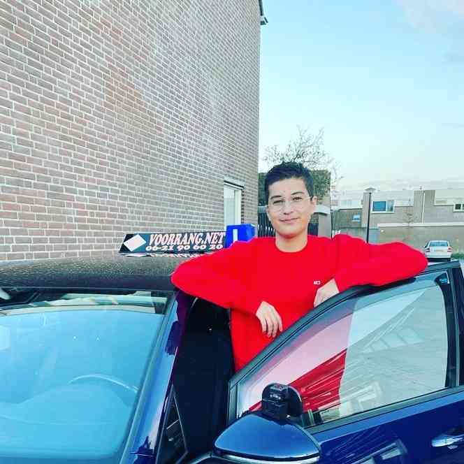

Umut Uçar
 Ik ben Umut. Ik ben 18 jaar oud. Momenteel woon ik samen met mijn ouders in Heerhugowaard. Ik één zusje van 14 jaar oud en één zusje van bijna 2 jaar oud. Momenteel zit ik op Han Fortmann in 4-HAVO. Helaas ben ik twee keer blijven zitten, maar dat is niet zo erg. Dit was in de tweerde en in de vierde. Mijn hobby's zijn fitness, coderen en gamen. Op school heb ik HTML en CSS geleerd en daar werk ik nu mee voor deze opdracht. Thuis zit ik vaak aan Lua. Dit is een iets ingewikkeldere programmeertaal. Dit gebruik ik vooral in een game. Het is leuk om te doen. Buiten school heb ik natuurlijk ook een bijbaan. Ik ben een kassamedewerker bij de Vomar.